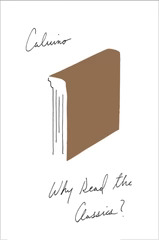

Why Read the Classics?
Perché leggere i classici
I don't know that I have much to say about this; like the critical essays in The Uses of Literature (which are included here as well), the breadth of Calvino's reading, knowledge, and expertise is on display, and it's impressive -- even if it's sometimes lost on me and my spotty-at-best knowledge of the works in question.
I do wonder a bit at how criticism may or may not have changed in the decades since Calvino was writing these essays. I'm much more familiar with film criticism than with contemporary literature critics, and the former is, by dint of economic incentive, markedly less virtuosic than this collection.